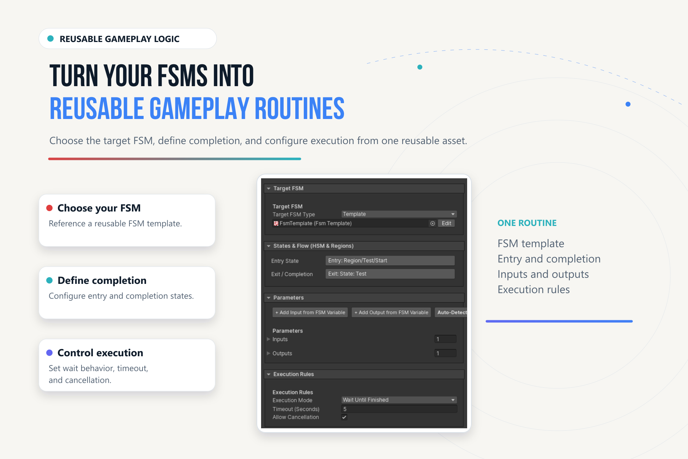

Callable Routines#
Use a callable FSM when GC2 should invoke a bounded PlayMaker operation and receive outputs. Use a reusable Gameplay Routine asset when that operation needs a shared definition of inputs, outputs, completion, and execution policy.
Choose an Entry Point#
| Entry | Configuration lives in | Use it for |
|---|---|---|
PlayMaker/Run PlayMaker FSM |
GC2 Instruction | Direct scene/prefab calls with input/output mappings. |
PlayMaker/Routines/Run Gameplay Routine |
Gameplay Routine asset plus call-site values | Reuse a named, typed operation across callers. |
| Send PlayMaker Event | Event sender and FSM graph | An unbounded state machine that owns its own lifetime. |
Call a Scene or Prefab FSM#
- Add Run PlayMaker FSM in a GC2 Actions list.
- Choose Scene Object or Prefab source. Assign the target or prefab and a unique FSM Name.
- Select execution mode deliberately. Restart is the serialized default; use a non-disruptive policy when another caller owns the FSM.
- Map input values into existing, compatible FSM variables. Map outputs to compatible GC2 destinations.
- Enable Wait Until Complete when the following GC2 Instructions depend on the result.
- Configure timeout/time mode, lifecycle management, cancellation, and prefab cleanup as appropriate.
- Author a real FSM finish path and test both normal completion and interruption.
| Setting | Meaning |
|---|---|
| Restart / Start | Request the corresponding native start behavior; review whether an existing run is affected. |
| Reject | Do not accept a conflicting active execution. |
| Join | Observe existing execution without taking ownership. |
| Lifecycle/cleanup policy | Choose whether an owned run stops, stays running, or its owned instance is destroyed. |
| Prefab Auto Destroy | Cleanup for a spawned instance according to the execution path. |
| Timeout and Time Mode | Bound waiting using the selected clock. |
| Input / Output mappings | Typed transfer at the call boundary; not ongoing binding. |
The instruction also exposes specialized execution policies in its mode selector. Inspect the field descriptions when using Start If Stopped, Restart Owned, Join Current, or Send Start Event And Join; they express different ownership/start intent.
Author a Gameplay Routine Asset#

- Open Gameplay Routines in the workspace and create/select a routine asset.
- Choose a target FSM object/prefab reference or FSM template. Configure its name and optional entry state.
- Define completion through FSM Finished, State Reached, Event Received, or the available combined rule.
- Add input/output definitions and bind them to existing FSM variables. Mark inputs required when omission should fail validation.
- Set execution policy, timeout, and cancellation. The asset defaults to Wait Until Finished, a 5-second timeout, and cancellation enabled.
- Add Run Gameplay Routine in GC2, assign the asset, configure target override if needed, and fill the typed call parameters.
- Validate the asset and run it in Play Mode. Inspect Store Success and trace outcomes before consuming outputs.
A routine asset's object/prefab reference identifies its FSM definition; do not assume it uses the direct callable instruction's prefab-instantiation lifecycle. Configure and verify the actual runtime target, or use the explicit Prefab source on Run PlayMaker FSM when that is required.
Execution Policies#
| Gameplay Routine policy | Intent |
|---|---|
| Wait Until Finished | Own a new invocation and wait for completion. |
| Run And Forget | Start and return without a synchronous result boundary. |
| Join Existing | Observe a compatible tracked invocation; do not inject new inputs into its run. |
| Restart Existing | Apply the runner's restart/ownership handling before a new invocation. |
| Reject If Running | Refuse conflicting execution. |
Joining is not a general attachment to any unrelated running native FSM. A compatible tracked invocation is required. A detached call cannot provide outputs immediately; consume results only at an actual completion boundary.
The Gameplay Routine runner uses realtime for its timeout measurement. This differs from the Scaled/Unscaled selector on the direct callable FSM instruction.
Test the Failure Paths#
Test missing targets, ambiguous names, required inputs, incompatible mappings, busy/join/restart policies, timeout, cancellation, and cleanup. A state named Done alone is not necessarily an FSM finish; choose State Reached explicitly if that is the routine's contract.
See Examples for the current state of the bundled callable example and a verified setup exercise.